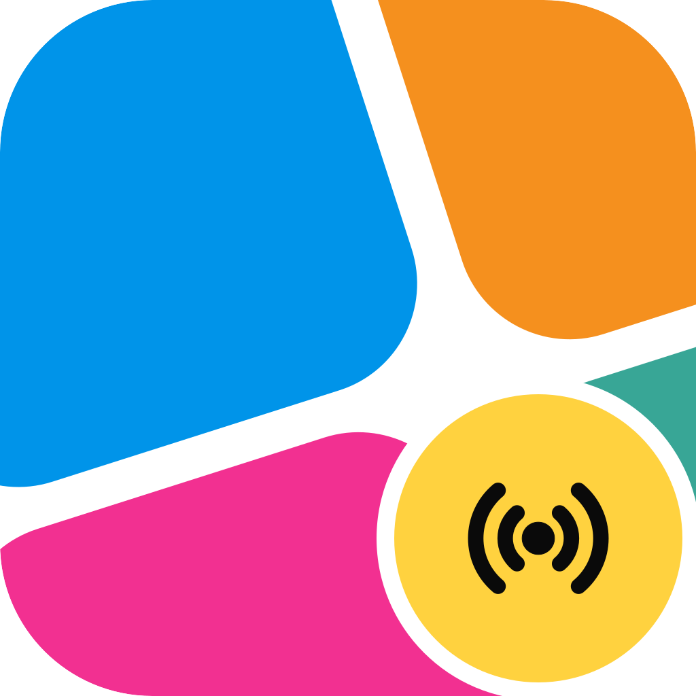

Install the Helrig Box firmwareFlash a Waveshare ESP32-P4-NANO from this page, with no tools to install. Version: loading….
This browser can't flash a board.
Web Serial is needed: use desktop Chrome or Edge (Windows, macOS or Linux). Safari, Firefox and phones don't have it. The build guide shows the command-line way.
Before you start
- Connect the board's UART USB-C port to this computer with a data cable. The pedal does not need to be connected.
- Close any program that has the board's serial port open (a serial monitor, another flasher).
- On Linux, your user must be in the
dialoutgroup (see the install guide).
What happens
- Your browser asks which serial port to use. Pick the one called USB Single Serial (it may also show as a
usbmodem,ttyACMor COM port). - The page checks the firmware files against their checksums, then writes them. It takes about 2 minutes: it runs at the slowest speed on purpose, because a faster one resets the board half-way through. Keep this tab open and the cable connected.
- The board restarts by itself. For a new box, join the Wi-Fi network Helrig Box <id> on your phone and open
http://192.168.4.1to give it your Wi-Fi. Setup guide.
If the page cannot connect, unplug and replug the board, or hold BOOT, tap RESET, release BOOT, and press the button again.
Firmware: ToneRelay (MIT) with the Helrig Box profile, from helrig-box. Flashing uses esptool-js (Apache-2.0). Helrig and the Helrig Box logo are Helrig's. Nothing leaves this page: it talks only to your board.